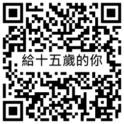

臺中明道中學台語課程學思達講義
育達全一冊第七課《我的人生，我創造》小組任務(一)
| 班級 | 組別 | 成員 | 成績 |
|---|
申論題。請小組合作完成，4題同齊(同時)進行。
(一)申論題會單獨計算一改(次)成績。
(二)總共有4題申論題，每1題25%。
(三)逐(每)題上(最)少愛(要)有200字。
(四)請使用台文書寫。運用「宗龍的台語課」網站將華文翻譯成台文。
 台語翻譯系統
台語翻譯系統坐號

Q1請閱讀課本P108佮(和)掃正爿(右邊)的QR碼。作者講𪜶(他的)小弟自細漢(小時候)就無愛(不喜歡)讀冊(讀書)，定定(常常)共(把)厝(家)內害去(壞掉)的物件(東西)拆開研究，予(讓)爸母唸講按呢(這樣)後擺(以後)欲(要)靠啥賺食21。請你揣(找)家己(自己)的生活中類似的例，抑是(或是)的身軀邊的朋友的例來佮(和)逐家(大家)分享。恁(你們)感覺爸母是用啥物(什麼)心情咧講遮的(這些)話?恁閣(還)是用啥物款(什麼樣)的話來回應爸母咧?十五歲的恁有啥物夢想，請恁參逐家分享。
坐號

Q2請閱讀課本P109佮(和)掃正爿(右邊)的QR碼。作者講𪜶(他的)小弟仔讀高職建教合作班，別人咧(在)讀冊(讀書)的時陣(時候)，伊(他)佇(在)工場(工廠)做穡(工作)，等歇熱(暑假)佮(和)歇寒(寒假)的時轉去(回去)學仔(學校)讀冊，而且閣拚勢(拼命)讀，見擺(每次)攏(都)提(拿)頭名(第一名)，高職出業(畢業)了後(之後)就無(沒有)共(向)厝(家)裡提(要)錢。當你知影(知道) 這个(這個)故事了後，你有啥物(什麼)感受?
【正面情緒】(用筆箍圓箍仔：歡喜、感動、有人愛、愛著人、感心、安全、風神、安慰、輕鬆、自由、心適、勇敢、勉勵、積極、自信、樂暢、有力、驕傲、趣味、齊勻tsiâu-ûn、燒烙sio-lō、冷靜、熱情、希望、恬靜tiām-tsīng、活力、好玄、敨放tháu-pàng、開放、感激、甜蜜、滿足、甘願。)
【負面情緒】(用筆箍圓箍仔：受氣、憤怒、艱苦、驚疑、受傷、齷齪ak-tsak、著觸tio̍h-tak、凊心tshìn-sim、鬱卒ut-tsut、孤單、驚惶kiann-hiânn、礙虐gāi-gio̍h、慒心tso-sim、不安、緊張、悲哀pi-ai、自責、虧欠khui-khiàm、掛心、懊惱、無奈、後悔、著狂tio̍h-kông、見笑、委曲、失落、失望、慼心tsheh-sim、心疼、毋甘m̄-kam、遺憾uî-hām、生狂tshinn-kông、失神。)
為啥物(為什麼)你會按呢(如此)感覺？是佗(哪)部份予(讓)你的印象傷深(最深刻)？
影片1：Angela Aki - 給十五歲的你06’13(https://www.youtube.com/watch?v=siQJhIp-UTU)
影片2：台東青年半工半讀 考上20間研究所01’33(https://www.youtube.com/watch?v=kdoA8Kl56Nk)
臺中明道中學台語課程學思達講義
育達全一冊第七課《我的人生，我創造》小組任務(二)
| 班級 | 組別 | 成員 | 成績 |
|---|
申論題。請小組合作完成，4題同齊(同時)進行。
(一)申論題會單獨計算一改(次)成績。
(二)總共有4題申論題，每1題25%。
(三)逐(每)題上(最)少愛(要)有200字。
(四)請使用台文書寫。運用「宗龍的台語課」網站將華文翻譯成台文。
台語翻譯系統坐號

Q3請閱讀課本P109~P110佮(和)掃正爿(右邊)的QR碼。作者𪜶(他的)小弟仔雖然是散赤(貧窮)家庭出身，毋過(不過)伊(他)無(沒有)認命，拚到最後出頭天，落尾(最後)佇(在)國家太空中心做工課(工作)，佇(在)2017年共(把)咱(我們)臺灣家己(自己)做的衛星對美國成功發射升空，是賜(讓)人驕傲的代誌(事情)，予(讓)咱知影(知道)雖然咱袂當(不可以)改變咱的出身，只要咱肯拍拚(努力)，猶是(仍然)會當(能夠)改變咱未來的人生。你敢(會)認同這个(個)觀念?是啥物(什麼)觀點予(讓)你按呢(這樣)想的？作者小弟閣(又)講伊家己只是團隊內底(裡面)的一粒(顆)小小的螺絲釘，你感覺伊為啥(為什麼)欲(要)按呢(這樣)講(說)咧(呢)?
坐號

Q4請閱讀課本P111佮(和)掃正爿(右邊)的QR碼。作者𪜶(他的)小弟仔論真(認真)做好家己(自己)的工課(工作)，伊(他)靠意志創造家己美好的人生，嘛(也)因為按呢(這樣)，𪜶(他們)的團隊才有今仔日(今天)的成果，這个(個)成功毋若(不但)是個人的成功嘛是(也是)團隊的成功，是袂少(不少)人堅持的驕傲。身為高中生的你，你感覺現此時(現在)你有啥物(什麼)愛(要)堅持的代誌(事情)?人講成功是留予(給)堅持落去(下去)的人，你敢有(會)認同咧(嗎)? 是啥物(什麼)觀點予(讓)你按呢(這樣)選擇咧？請舉例參(與)逐家(大家)分享。
影片3：「最台衛星」福衛五號 100%台灣設計08’40(https://www.youtube.com/watch?v=RuoIopn8K3M)
影片4：年輕人 請堅持夢想04’09(https://www.youtube.com/watch?v=E5ngr2xeULM)
影片5：相信自己 成功是留給堅持下去的人04’50(https://www.youtube.com/watch?v=Nqr26Rfo05c)